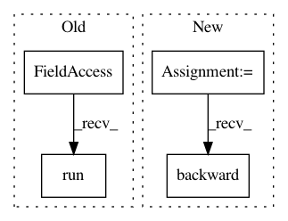

3d9e51d5034e89bcec3a04eff3e646c70b45edb2,classify/python/tf/train.py,Trainer,train,#Trainer#Any#Any#Any#,43
Before Change
ts_i = data.batch(ts, si, batchsz)
feed_dict = self.model.ex2dict(ts_i, 1.0-dropout)
_, step, summary_str, lossv, accv = self.sess.run([self.train_op, self.global_step, self.summary_op, self.loss, self.acc], feed_dict=feed_dict)
self.train_writer.add_summary(summary_str, step)
total_corr += accv
total_loss += lossv
After Change
ts_i = data.batch(ts, i, batchsz)
feed_dict = self.model.ex2dict(ts_i, 1)
lossv, guess = self.sess.run([self.loss, self.model.best], feed_dict=feed_dict)
cm.add_batch(ts_i.y, guess)
total_loss += lossv
total = cm.get_total()
total_corr = cm.get_correct()
In pattern: SUPERPATTERN
Frequency: 3
Non-data size: 4
Instances
Project Name: dpressel/mead-baseline
Commit Name: 3d9e51d5034e89bcec3a04eff3e646c70b45edb2
Time: 2017-03-16
Author: dpressel@gmail.com
File Name: classify/python/tf/train.py
Class Name: Trainer
Method Name: train
Project Name: IBM/adversarial-robustness-toolbox
Commit Name: 64764718080b11c8fb91df34c12e0ce8ac54aa4e
Time: 2018-05-15
Author: M.N.Tran@ibm.com
File Name: art/classifiers/pytorch.py
Class Name: PyTorchClassifier
Method Name: fit
Project Name: IBM/adversarial-robustness-toolbox
Commit Name: 9b9a42de05056b418f98e3635f2cffd747123548
Time: 2018-05-16
Author: M.N.Tran@ibm.com
File Name: art/classifiers/pytorch.py
Class Name: PyTorchClassifier
Method Name: loss_gradient